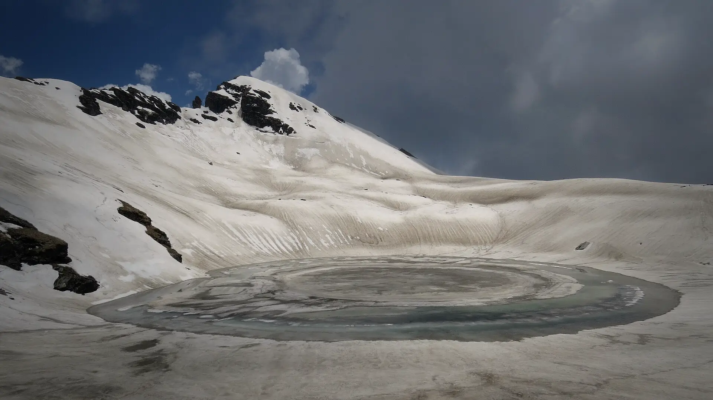

01Day 1 · Gulaba · about 3,000 mkm 0.1
Above Manali
21–27kmFrom Manali · 1–2 h up the Rohtang road
The drive from Manali climbs the Rohtang Pass road to Gulaba. A twenty-minute walk takes you to the first camp on the meadows above the road.

Photo: Vishalwiki2606, CC BY-SA 4.0भृगु झील · Kullu, Himachal
The trek in one line, and what you can do with it.
Bhrigu Lake is an easy trek with a steep feel: it climbs the whole way to a lake at about 4,300 m.
4 stops on the map, then the climb. Scroll the stops and the map follows.
01Day 1 · Gulaba · about 3,000 mkm 0.1
21–27kmFrom Manali · 1–2 h up the Rohtang road
The drive from Manali climbs the Rohtang Pass road to Gulaba. A twenty-minute walk takes you to the first camp on the meadows above the road.
02Day 2 · Rola Kholi · 3,800 mkm 6.5
+600mGain today · 6 km · about 4 h
A steady climb through the meadows to Rola Kholi, the high camp below the lake.
03Day 3 · Bhrigu Lake · about 4,300 mkm 11.4
10kmThere and back · About 8 h
From Rola Kholi the trail climbs to Bhrigu Lake, a small high lake at about 4,300 m that changes colour with the seasons and partly freezes.
04Day 4 · Gulabakm 22.9
6.5kmToday · About 3 h down
The last morning retraces the trail down to Gulaba.
Best in May–Jun, Sep–Oct.
Dark: the months the trek’s sources call its best. Mid: possible. See all treks in May.
Base prices from 8 operators’ own pages, per person. GST and travel are often extra. Treqz sells nothing.
The practical things, then the questions people ask.
Bikat says Airtel and Jio work on most of the trail. Himalaya Shelter says signal is almost gone at the higher camps. Don't count on it.
Bikat Adventures, Himalaya ShelterThe last charging point is your hotel in Manali. Bring a full power bank.
Bikat AdventuresOperators serve breakfast, lunch, tea and dinner. Meals are vegetarian, with eggs on some days.
Bikat AdventuresYou share a two-person tent; a single tent costs ₹1,500 more with Bikat. Toilets are dry pits in a toilet tent.
Bikat AdventuresAbout 23.0 km of walking over 4 days on the trail.
The highest point is 4,300 m, about 1,310 m above the start.
Its sources grade it Easy.
May–Jun, Sep–Oct. It is also possible in Jul–Aug.
₹4,000 to ₹11,500 per person: base prices from 8 operators' own pages. GST and travel are often extra.
Bikat says Airtel and Jio work on most of the trail. Himalaya Shelter says signal is almost gone at the higher camps. Don't count on it.